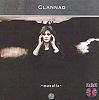

Celtic Lyrics Corner > Artists & Groups > Clannad > Macalla > Blackstairs
|  | Blackstairs |
| Credits : | n/a |
| Appears On : | Macalla |
| Language : | English |
Lyrics :
Colder eyes, they look through me
Stare those eyes at me
You must be one of those girls
Who live on the blackstairs
Yes, you must be one of those girls
Who live on the blackstairs
There's no disguise upon your face
You're not like anyone I know
They give so freely and they come when I come out
But you're the one, the one I want to understand
You must be one of those girls
Who live on the blackstairs
Yes, you must be one of those girls
Who live on the blackstairs
You're not scared, no, you don't answer
You just stand there, face the stairs going home
If I could choose my own way down
I'd take the road to the blackstairs
You must be one of those girls
Who live on the blackstairs
Sadness raging in the broken man
Stays until the day ends
When he is free to think of better days again
Looks the scales of love and time are all the same
You must be one of those girls
Who live on the blackstairs
And I long to up there
And live on the blackstairs
Yes, you must be one of those girls
Who live on the blackstairs